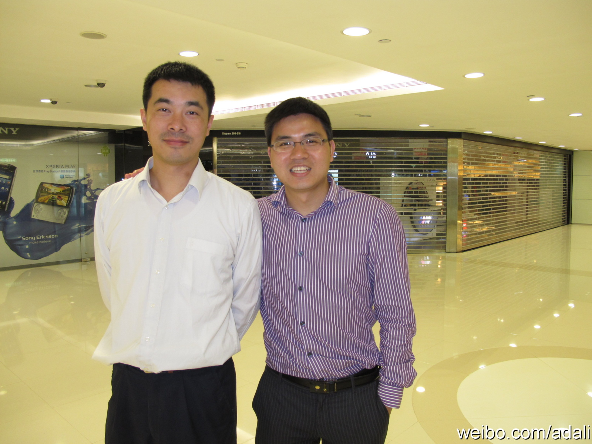

以前有过这样的经历，很愿意尝试新项目，喜欢在项目中采用时髦的新技术，觉得这样对自己提高最大。但如果工作五六年之后，还是这种思路就很可怕。职业素养要求技术人员不要辜负公司和客户的托付，自身能力的提高只能是副产品。－有感于”客户需求重于个人简历“一文，《软件架构师应该知道的97件事》
姣姣的期中考试卷子拿回来了，语文和数学都是98分，按照明俊的要求，真是一分不多，一分不少。@Ada李力:姣姣数学考了95分，明俊很不解：“怎么能错五道题呢？”。姣姣辩解：“我们班还有考75分的呢”。明俊：“考100分的有多少？”。姣姣：“不到班上的一半吧”。我都听晕了，那么多满分的。姣姣安慰我们：“没那么多，但比五个多，可能超过10个吧”。明俊命令：“以后不许考98分以下！”。这命令管用么？
在香港见到了原来的同事，Alex Peng 原来的Solaris Evangelist, 和Joey Guo，之前的高校合作经理。我们曾经都是一个战壕里的，现在这俩人都投向了金融行业，而且座位背靠背。Solaris在金融领域应用还是很广，当然还有Java。 
这也是我们做架构师沙龙的原因。[呵呵] //@dazuiba:只能说互联网行业在软件业的比重越来越大了，前者更新换代快，更注重用户体验的细节；后者技术壁垒高，商业逻辑复杂，更注重架构设计。@阿朱:听到一个笑话：在软件业每几年就会出现一个挨板子的，过去是项目经理，然后是架构师，现在是产品经理。----听到这个笑话在反思到底走过了一条什么样经历的路，现在的项目管理和架构是否做的已经好了，为什么他们不挨骂了，为什么现在轮到产品经理挨板子了？到底意味着什么 ？